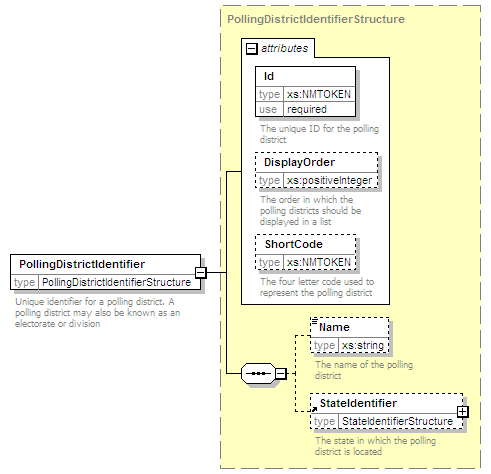

| diagram |  | ||||||||||||||||||||||||||||||
| namespace | http://www.aec.gov.au/xml/schema/mediafeed | ||||||||||||||||||||||||||||||
| type | PollingDistrictIdentifierStructure | ||||||||||||||||||||||||||||||
| properties |
|
||||||||||||||||||||||||||||||
| children | Name StateIdentifier | ||||||||||||||||||||||||||||||
| used by | |||||||||||||||||||||||||||||||
| attributes |
|
||||||||||||||||||||||||||||||
| annotation |
|
||||||||||||||||||||||||||||||
| source | <xs:element name="PollingDistrictIdentifier" type="PollingDistrictIdentifierStructure"> <xs:annotation> <xs:documentation>Unique identifier for a polling district. A polling district may also be known as an electorate or division</xs:documentation> </xs:annotation> </xs:element> |